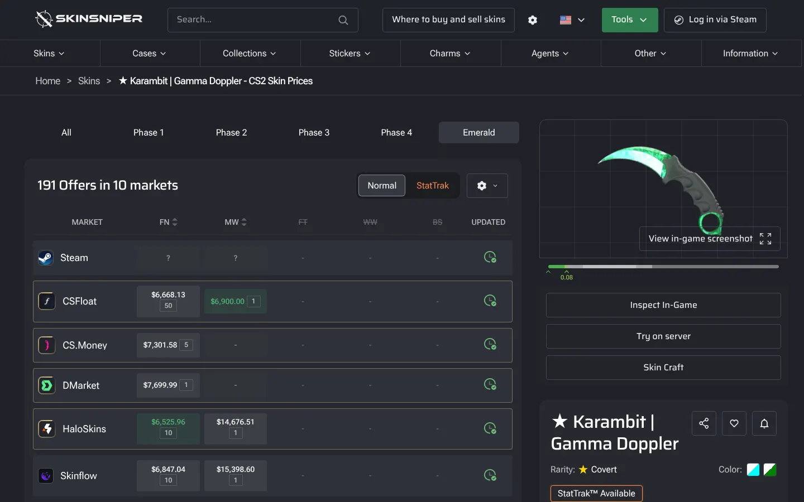
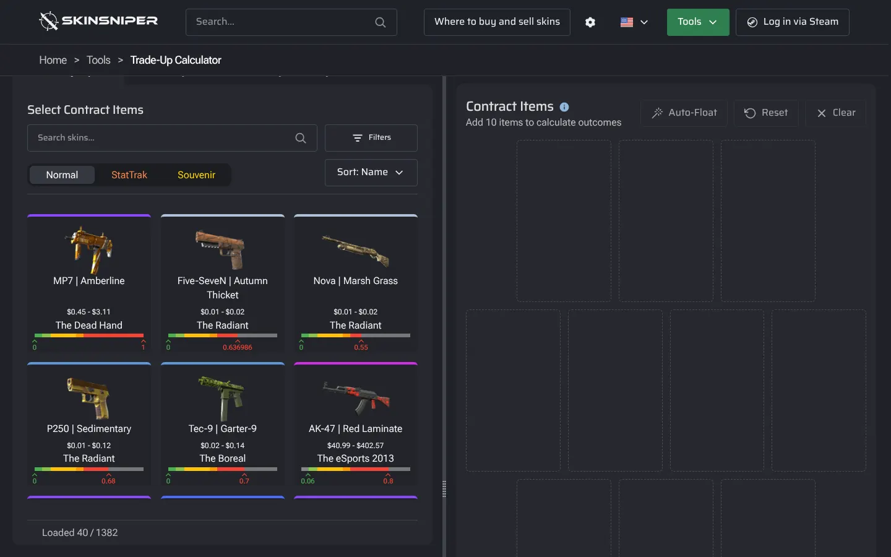
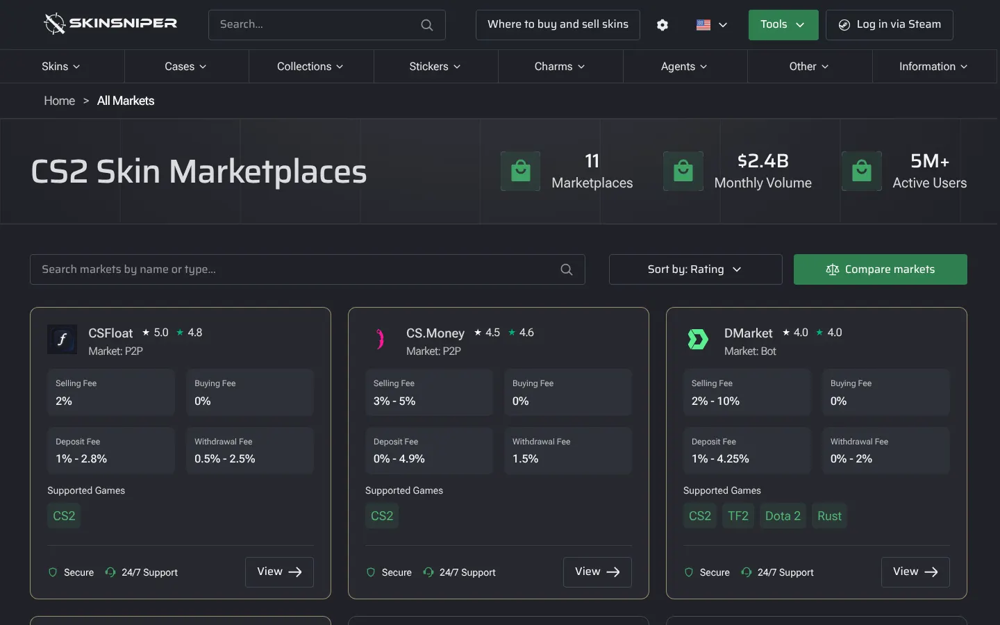
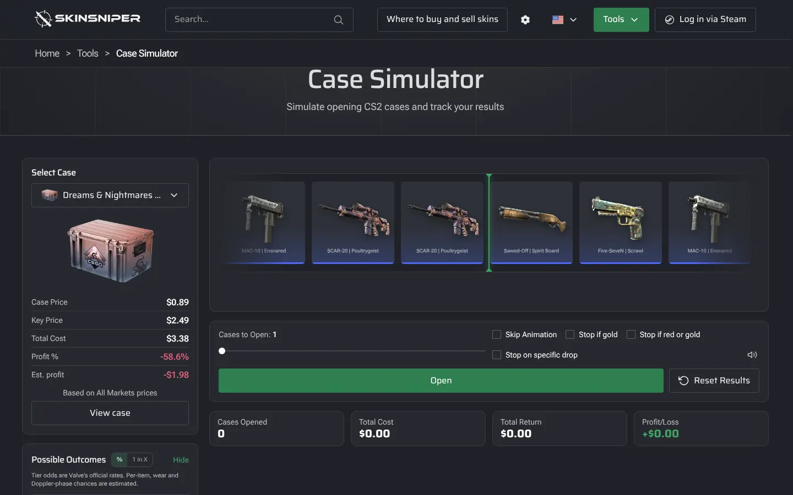
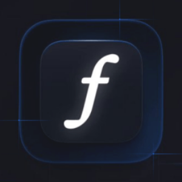
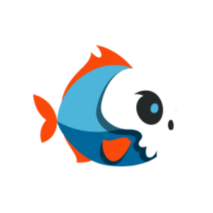

SkinSniper
El buscador de skins de CS2. Encontrá cualquier ítem, mirá lo que cuesta en cada mercado y usá más de 26 herramientas gratis.The CS2 skin search engine. Find any item, see what it costs on every marketplace, and use 26+ free tools.





Todo sobre skins, en un solo lugarEverything about skins, in one place
Antes de comprar o vender un skin, la mayoría de los jugadores abre cinco pestañas: Steam, un par de mercados, un sitio de floats y otro de patrones. SkinSniper junta todo eso en una sola página.
Cada ítem tiene su ficha con el precio en Steam y en los principales mercados, el historial de precios, el desgaste y los patrones especiales. En segundos sabés dónde conviene comprar y cuánto vale lo que tenés.
También cubre todo lo nuevo de CS2: colecciones, cajas, cápsulas de stickers, amuletos, agentes, la Armería y las mascotas de la actualización Rush Hour.
Before buying or selling a skin, most players open five tabs: Steam, a couple of marketplaces, a float site and a pattern site. SkinSniper puts all of that on one page.
Every item has its own page with the Steam price and the price on the main marketplaces, price history, wear and special patterns. In seconds you know where to buy and what your items are worth.
It also covers everything new in CS2: collections, cases, sticker capsules, charms, agents, the Armory and the pets from the Rush Hour update.
Lo que podés hacerWhat you can do
26 herramientas, todas gratis. Tocá cualquiera para abrirla.26 tools, all free. Tap any of them to open it.
Saber cuánto valeKnow what it’s worth
Compará precios, seguí cómo se mueven y recibí alertas cuando un skin llega al precio que querés.Compare prices, follow how they move and get alerts when a skin hits your price.
Probar antes de gastarTry before you spend
Abrí cajas, cápsulas y terminales con las probabilidades reales, y calculá contratos antes de hacerlos.Open cases, capsules and terminals with real odds, and work out trade-ups before you do them.
Mirar cada detalleSee every detail
Previsualizá stickers sobre un arma, revisá fases y patrones Fade, o inspeccioná un ítem en un servidor.Preview stickers on a weapon, check Fade phases and patterns, or inspect an item on a server.
Armar y compartirBuild and share
Armá tu loadout ideal, hacé un ranking de skins para compartir o usá la extensión para ver precios mientras navegás.Build your dream loadout, make a skin tier list to share, or use the extension to see prices as you browse.
Un skin, todos los mercadosOne skin, every market
SkinSniper compara Steam con los mercados más usados y te muestra dónde está el mejor precio en este momento.SkinSniper compares Steam with the most popular marketplaces and shows where the best price is right now.
 Steam
Steam
CSFloat- BUFF Market

Skinport- DMarket
 CS.Money
CS.Money- Waxpeer
- White Market
- SkinsMonkey
- HaloSkins
- Skinflow
Buscá tu próximo skinFind your next skin
Gratis y sin registrarte. Entrá con Steam solo si querés alertas o ver tu inventario.Free, no sign-up. Log in with Steam only for alerts or your inventory.